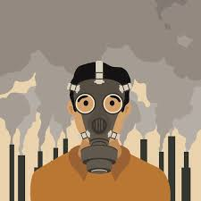
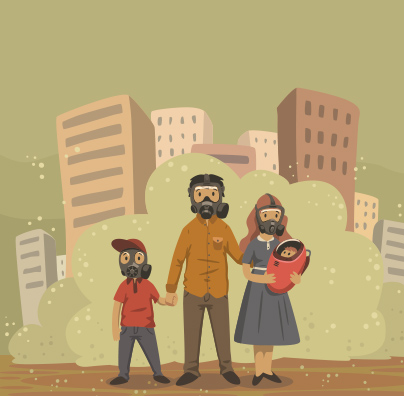
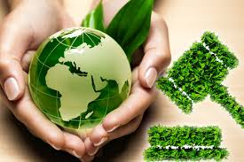

Control de la contaminación
El término control de contaminación es usado en gestión ambiental. Y significa control de las emisiones y efluentes que se liberan al aire, agua y suelo.
Sin un control de contaminación, desechos de consumo, calor, agricultura, minería, industrias, transporte y otras actividades del hombre, degradan y degradarán el
medio ambiente. En la jerarquía de los controles, la prevención de contaminación y la minimización de residuos son preferibles que el control de contaminación en si.
Las técnicas y prácticas utilizadas para reducir o eliminar las emisiones contaminantes dependen del agente contaminante que se quiera atacar.
La educación desde un nivel inicial debe ser sobre la contaminación, sus consecuencias y formas de evitarla. Ayudaría concientizar a muchas generaciones sobre los
problemas del medio ambiente, a medida que estas generaciones se vuelvan adultas provocarían más presión sobre la protección al medio ambiente. Impulsando más
controles y políticas de medioambientales.
Desarrollo sostenible
Un control definitivo a la contaminación (que agota los recursos medioambientales) sería la adopción de una economía de desarrollo sostenible que aseguraría que
"los recursos para satisfacer las presentes generaciones estén disponibles sin comprometer el desarrollo de las futuras generaciones". Cumpliendo con sus tres
ámbitos de importancia la ecología, la economía y la sociedad de acuerdo al Programa 21 de Naciones Unidas. El desarrollo sostenible también forma parte del séptimo
Objetivos de Desarrollo del Milenio de Naciones Unidas, el cual busca "Garantizar el sustento del medio ambiente".

Aproximadamente desde finales de la década de los 60, la contaminación y el deterioro medioambiental comenzó a ser considerada como un problema político en varios
países industrializados. Como consecuencia de la toma de conciencia y de la preocupación que se fue generando muchos países fueron introduciendo una legislación
medioambiental y sobre la década de los 80 se crearon agencias de protección medioambiental en distintos países así como en organizaciones internacionales como la
ONU.
Ya desde los primeros planteamientos que se realizaron sobre la necesidad de una acción internacional conjunta de protección del medioambiente, muchos países
subdesarrollados manifestaron su preocupación porque las medidas de protección medioambiental podrían frenar el necesario crecimiento económico e industrial que
precisaba su población. Se vio que la industrialización había resuelto las necesidades de la población de los países desarrollados y ahora estos podían permitirse
expresar su preocupación medioambiental mientras que los subdesarrollados no podían todavía. Así la introducción de legislaciones de protección medioambiental en
algunos países desarrollados a principios de los 70 representó una cierta ventaja para algunos países subdesarrollados, pues las nuevas plantas industriales de
sustancias químicas se establecieron en esos países subdesarrollados que tenían una legislación más permisiva y que suponía un menor gasto en equipamiento para
controlar la contaminación. Accidentes como el de Bhopal, en la India, donde en diciembre de 1984 murieron 18000 personas en un escape en una planta de isocianato de
metilo demostraron la necesidad de disponer de medidas anticontaminantes en todas las plantas.